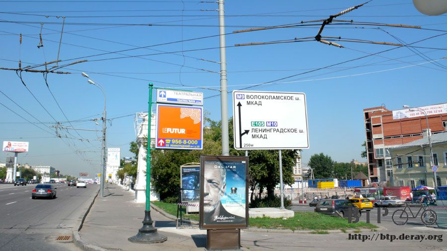
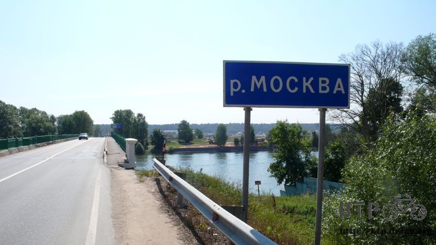
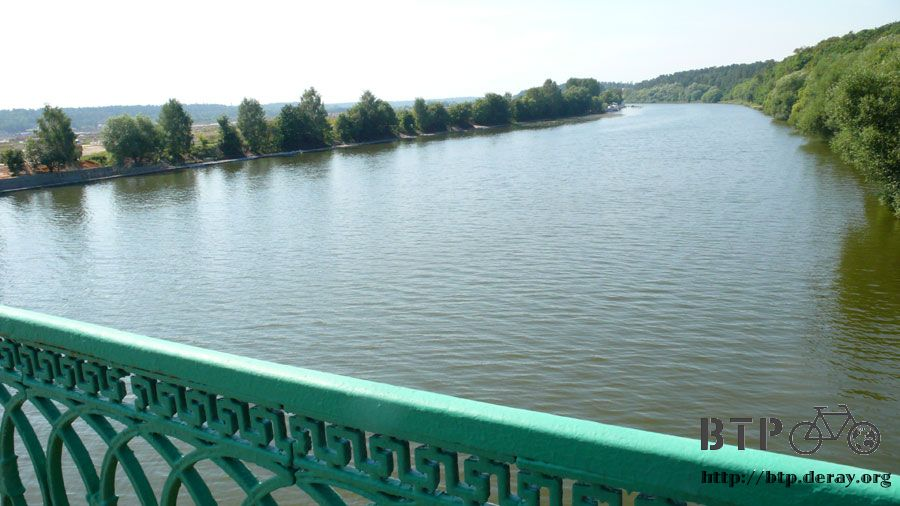
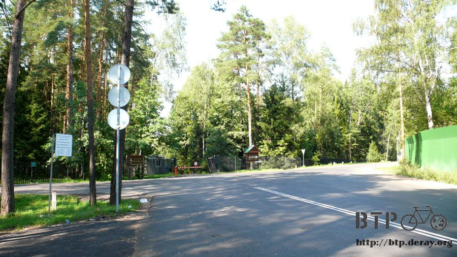
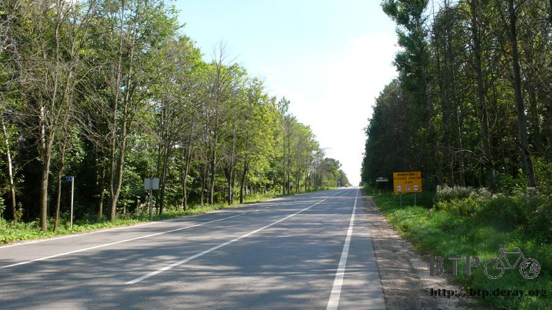

最初之姿
看著兩個從日本空運到台灣，台灣再空運到俄羅斯的嶄新車輪，全新的外胎、強化過的輪框、一塵不染的齒輪組。
再看著騎了一萬公里的小多，胎面磨損、鋼絲斷裂、輪框變型，陷入深深的長考。
要不要換新的輪胎呢？不論換還是不換，都會面臨下一個問題，多的兩個輪胎該怎麼辦呢？
其實有什麼好考慮的？
最簡單的做法就是把這兩個飛了半個地球寄到莫斯科的全新車輪換上去就好啦～舊的就可以拿去丟掉了。
我問小多要不要換？
小多說還撐得住，不要把舊車輪給換掉，要用原裝的型態騎到巴黎去，髒一些、破一點沒關係，這是最初的堅持。
我同意小多的看法，試想，要是騎到莫斯科之後來一個路人甲要把我換掉，接下來的路換他騎，我也會說門都沒有。
但是新寄到的輪胎總不能再飛半個地球寄回台灣去，得想個辦法載著走。
騎自行車長途旅行只看過攜帶內胎跟外胎，一口氣攜帶兩個備用車輪的還真是罕見，沒有前例可循的情況下只好自己想主意。
不是小多載就是我自己背，但是我自己沒辦法背，所以重擔又落到小多身上。
原本已經背負了五個背包、睡袋、睡墊，怎麼看都已經行囊滿載的小多該怎麼再多背兩個大車輪呢？
試了老半天，最後研究出一個好方法。
先將兩個車輪用童軍繩打結綁在一起，然後呈V字型打開掛在睡袋上。
童軍繩再繞過鋼絲綁在車架，這樣子就不容易掉到地上去。
看起來和本來的差異也不大，車體也不會增加太多面積，從旁邊經過的車輛才不會擦撞到，也不影響原本騎乘的感覺。
本來以為很難，結果還是想出辦法，從今天開始小多就變成四輪車了。
接下來就看破萬公里的外胎能不能撐到巴黎，萬一半路掛掉了，還有備用的新車輪可以換，舊的也不會丟棄，帶著走一路到巴黎，絕對不會遺棄任何一部份的小多。
離開莫斯科之前先到市區的外交部駐莫斯科的辦事處道別，辦公室就在這條街裡面，得想辦法繞過車水馬龍的大馬路才行。
謝謝外交部的耿秘書和凱右帶我去吃美味的日式料理，也幫忙接洽烏克蘭關於簽證的事情，雖然之後決定不走烏克蘭，還是很感激他們的幫忙。

閒聊之中凱右說他剛剛才在處理也是台灣騎自行車的人在俄羅斯出車禍的事情。
好像是被醉漢給撞到，幸虧醒來的時候人已經在醫院，除了輕微腦震盪之外應該不太嚴重，行李也沒有遺失，但就不繼續騎了。
其它還在路上的旅行者，不論各位的進度在什麼地方，都保佑大家可以順利到巴黎，包括主辦人也是一樣，衷心祝福大家。
拜訪過外交部駐俄單位之後就該上路了，這時候都已經將近中午了，昨天研究地圖的結論是走M1公路就可以從莫斯科一路穿越白俄羅斯抵達波蘭。
路線簡單得令我鼓掌叫好，只要能接上M1，騎一千公里之後就是波蘭了，那該怎麼接上M1呢？

市區的道路複雜得讓我頭很痛，在市區中走走停停，不時查看著手上的莫斯科指南搭配精裝本的俄羅斯地圖，還是搞不清楚東南西北。
停靠在公車站研究方向的時候，等公車的大叔主動過來幫忙，讓我很感激他的熱心，地圖分他一起看，結論是我走錯路了。
大叔說要回頭走才行，從這邊沒辦法到M1。
往回頭走總是令人覺得厭煩，市區的道路也太複雜了，莫斯科外圍似乎有圓環的道路，打算先離開市區，然後再兜個圈子接上M1。
在公車站旁的書報攤買瓶汽水和兩條蛋糕沿路吃，莫斯科待了六天，所有的糧食都吃光了，又要沿路慢慢補充糧食。
要走M1的話必須從西邊離開俄羅斯，不知道怎麼搞的我一直在往北邊走，所以M1接不上，不停地靠往M9公路騎。
接下來一路就穿越隧道、鐵路，遇到這些地方就在地圖上尋找對應的位置，可惜沒那麼容易。

離開市區之後看見環狀路，也看到M1的指示牌，但環狀路是汽車專用道，自行車不能上去，只好走平面道路東繞西繞。
道路指示牌上的路名和地名越來越細，A開頭的公路在法國可是高速公路的意思，在俄羅斯是連地圖都找不到的路。
村莊的名稱也越來越詭異，到後來只好放棄看地圖，完全依照指南針跟太陽的方向在騎車。
離開莫斯科還是可以看到莫斯科河，它的流域面積很廣，這裡河水偏深綠色，一路流經莫斯科。


過橋的時候比照地圖自己所在位置，但是有太多的路是跨越莫斯科河，還是沒能成功的定位。
路越走越小條，已經到了森林裡面，用膝蓋想也知道這裡絕對不是聯外的主要道路，心中小小的期盼可以連接上大馬路。
走著走著就進入了森林保護區，車輛要進入還得通過柵欄才得以放行，徹底的迷路了。

路旁有自行車騎士到這邊踏青，這裡的環境還蠻適合騎自行車呼吸新鮮空氣的，可是現在沒這個閒情雅致，拿出地圖詢問M1到底該怎麼走？
得到確定的回答，不是往那邊走能到M1，而是從這裡繼續往下走絕對到不了M1，再進去就是森林了，連路都沒有，只能回頭找別條路騎。
看到警察哨亭的時候主動靠過去問路，已經離開莫斯科了，警察應該又恢復誠懇待人的樣貌。
拿著精裝本的地圖問該怎麼走，這本我視為寶物的地圖之前被警察說太遜，他看不懂，這邊的警察也是抓抓頭，說前面左轉，然後再想辦法問人。
依照情報，左轉繞過草原和爬坡的山路，這邊的路跟剛才那個森林小徑差別不大，看起來就不是聯外道路的樣子。

警察應該不會隨便唬爛我，相信他的話繼續騎這個爬坡路，在這種荒郊野外竟然有二十四小時經營的雜貨店。
爬坡氣喘吁吁，買點喝的和吃的，牛奶冰淇淋最能消除騎車的辛勞。
大概半個月前，從烏法接上M7之後，這本地圖就已經被收在包包裡很久都沒有拿出來，現在陷入大迷路狀態，地圖始終不離手，繼續再向店員問路。
店員則抓著開車過來買東西的大嬸問路，大嬸再向開小貨車來補貨的司機問路，這麼大一條M1，居然這麼難找。
大家討論的時候我就吃著冰，只要別跟我說還得回頭走，其它要怎麼兜圈子都沒關係。
結論是往前騎沒問題，不會接到M1，但是會接到和M1平行的道路，到時候再想辦法就好了。
一路上問路都是這樣，先往那邊走，到時候再想辦法，非常符合這次旅行的風格，只要不是絕路，總有辦法的。
吃完冰、喝了滿肚子可樂，騎完這一段山坡路之後就看見剛才他們所說的大馬路，終於有一個道路指示牌的地名是在地圖上找得到的。
到這個路口的時候已經騎了一百一十五公里，但是距離莫斯科不到七十公里，感覺騎了很多路，可是全部都是迷路跟繞路。
又騎了一個小時，左側出現一條平行的路，雖然沒看到路牌，但這一條肯定就是找了大半天的M1！
之後看見指示牌，果然是M1沒錯，又稱為E30道路，騎到這邊就算成功一半了，再度將地圖給收起來，接下來只需要沿著路騎即可。
指示牌上標誌的是白俄羅斯的首都，明斯克，距離不明，但這條路全長一千公里出頭，騎到底應該就是波蘭的邊界了。
俄羅斯的簽證到期日是二十二日，今天是十三日，剛好十天的時間讓我騎到波蘭去，不要出什麼狀況的話還算挺有餘裕的時程。
小多變成四輪車之後騎起來的感覺並沒有差異，路上在跑的大卡車則注意到了四輪車的小多，全部～每一輛～無一例外都會繞道讓我。
之前那種超近距離疾駛而過的情形已經不再發生，每次有大卡車禮讓的時候， 我都會舉起手揮舞表示感謝。
今天手揮個不停，右手揮痠就換左手，你就知道禮讓我的卡車數量有多少。
路旁看到的飛機雕像，漸漸離開莫斯科之後那些龐然大物的建築就看不見了，再度變成俄羅斯的景觀。
手錶的時間調整為莫斯科時間，和台灣時差四小時，太陽下山的時間又從晚上十一點變成正常的九點。
今天都沒進餐廳吃正餐，一開始是因為迷路在找路，接回M1之後也離開市區了，又變成幾十公里才有休息站出現。
今天肚子裡都是冰淇淋、可樂和蛋糕，但是一點也不會覺得肚子餓，體力也好得很。
在太陽下山之前要尋覓適合的過夜處，看見這棟貨櫃改建的小屋時，心裡想說就是它了，既隱蔽又有屋頂。
無奈的是，走過去發現門竟然是鎖上的，這種破小屋有什麼好鎖的呢，難怪我都只能找沒有門的廢墟露營，因為只要有門就會有上鎖。
踹了兩腳也打不開，那就算了，找別的過夜處，如果成功踹開的話，遊記中就會寫說，『門輕輕一推就打開～真是幸運』。
騎到這邊的時候天色已經快要暗了，又是公車站，明明就位於路邊、隱蔽度又很差，但我老是睡在這裡。
這一站連側面的牆壁都沒有，在這過夜的話，路過的每輛車都會清楚的看見我，管它的，照睡不誤。
今天就睡在公車站的後面，難得看到公車站後面如此乾淨，沒有一坨坨的大便，睡在這裡也不容易被發現。
拍照的時候天色越來越黑，閃光燈都得開啟才能拍照，山區的夜裡蠻冷的，離開莫斯科的宿舍之後又恢復旅行的風格。
小多堅持用最初的姿態騎到巴黎，我也會堅持最初的理念前進，腿打斷也不放棄。
繼續閱讀：8.14 請認明原產地
俄羅斯-盧布－ 1：1.3 台幣
8.13 |
總計：246元 |
可樂34元、蛋糕兩條40元、商店採購172元 |
|